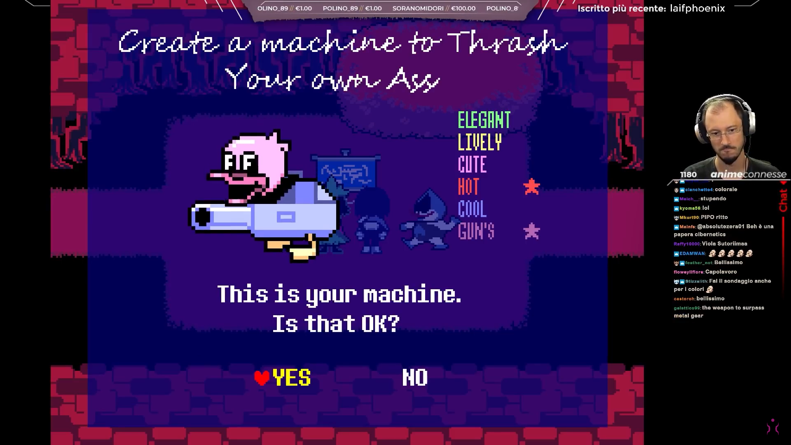

Ciao Sabaku! Ne è passato di tempo da quando hai giocato Deltarune. Più precisamente, è nel lontano Novembre 2018 che lo giocasti per la prima volta, a fine 2021 rigiocasti il ch1 seguito dalla blind del ch2! Siccome sono passati parecchi anni, questo sarà un documento che presume che il lettore abbia interagito poco o niente con il gioco e la sua community, quindi andrà parecchio in dettaglio riassumendo ed evidenziando molteplici elementi dei vari capitoli, sottolineando particolari che potrebbero o non potrebbero essere importanti che in ogni caso sarebbero molto più freschi nella mente di un appassionato rimasto aggiornato. Certamente più veloce di rigiocarlo, ma questo documento sarà tutt’altro che una cosa veloce. Saranno inclusi vari link che rimostreranno scene, screenshot, dialoghi e vari, spesso della tua stessa run per ricordare quei momenti in live.
Riassumiamo gli eventi principali, per poi concentrarci di più sui boss segreti, personaggi dettagli, chicche, trivia, segreti e quant’altro in seguito:
ARE WE CONNECTED?
EXCELLENT.
TRULY EXCELLENT.
NOW.
WE MAY BEGIN.
Ottimo, ora possiamo iniziare.
Creiamo il nostro personaggio, anzi no, il nostro “recipiente”.
Testa, torso, gambe. Cibo preferito? Salato; Gruppo sanguigno preferito? B; Colore preferito? Ciano; e in dono la Voce.
Forse Sabaku, il suo creatore, lo teme un po’, ma ora Maiku è pronto.. pronto per essere scartato, perché “nessuno può scegliere chi è in questo mondo”.
Kris si sveglia ed è pronto ad andare a scuola accompagnato dalla madre adottiva Toriel (una Dreemur) Assaporiamo subito un mondo parallelo rispetto a quello di Undertale, pieno dei vecchi amici già incontrati, ma con un trascorso diverso.
Entriamo in classe in ritardo, ma per fortuna c’è qualcuno più in ritardo di noi, Susie, la classica bulla che riesce a terrorizzare pure i professori. Non sorprende che la nostra insegnante Alphys, appena scopre la mancanza dei gessetti, la spedisca ad andarli a prendere nel ripostiglio, e Kris con lei perché si “assicuri che stia fuori dai casini”.
Kris becca Susie mangiare il gessetto, e qui avviene una scena abbastanza inquietante, nella quale Susie dice “Le tue scelte non hanno importanza”, cosa che sembra essere “meta” dato che le nostre scelte spesso portano allo stesso identico risultato, o a volte ci viene persino tolta la possibilità di farne e basta. In ogni caso certi eventi come la weird route o le reclute sembrano suggerire che questo “motto” sia un po’ come quello di Flowey in UT “Kill or be killed”, una cosa per far sviare e preoccupare il giocatore.
Il ripostiglio rivela al suo interno un mondo sconosciuto: il DARK WORLD, con il suo principe Ralsei (anagramma di Asriel) che aspetta i nostri due studenti da tempo. Vede in loro, infatti, i due Eroi che lo aiuteranno a sigillare le Fontane di Oscurità per ristabilire l’equilibrio tra luce e buio e adempiendo così alla Profezia di Deltarune.
Ma Susie non è interessata a diventare l’eroe del mondo e preferirà staccarsi dal gruppo per cercare in autonomia la via per tornare a casa, ma non prima di aver tentato di spaccare la sua ascia in testa al Darkner Lancer, un autoproclamato “Bad Guy” che irrompe con la sua bicicletta e che, per qualche motivo, vuole impedire al gruppo di farsi strada.
L’avventura in solitaria di Susie non dura molto e verrà presto bloccata da uno dei primi puzzle disseminati nel mondo. Si convince quindi ad unirsi al party.
Tra i tre, però, non v’è particolare armonia, specialmente per il fatto che Susie continui a attaccare aggressivamente i nemici nonostante i continui inviti di Ralsei a risolvere gli scontri pacificamente.
Forse il vero posto della bulla è con Lancer, che giocosamente continua ad interromperli nel loro viaggio, e pian piano inizia a vedere nella ragazza una fonte di ispirazione per il suo ruolo di “cattivo”
Adesso i due gruppi sono formati, e mentre quello dei “buoni” si dirige al castello ove si trova la fontana da sigillare, i “cattivi” sono impegnati ad escogitare un piano per fermarli: costruiranno una macchina da guerra per devastare Kris e Ralsei.
Arriva lo scontro, il piano si rivela da subito fallimentare e la fighissima macchina da guerra che abbiamo progettato noi stessi, esplode subito.

Susie però non demorde, vuole comunque combattere e propone, in caso di sconfitta, di unirsi a loro, e così accade, e per non far rimanere male Lancer, anche quest’ultimo si unisce.
Ma proprio ora, il piccolo realizza quanto in realtà la situazione sia seria.
Infatti gli era stato affidato il compito di fermarli da suo padre, King, che dopo un golpe contro gli altri 3 re, è diventato il solo sovrano del mondo di Carte. Lui e gli altri Darkner, come narrato dal mercante Seam (pronunciato “Shom/Shawm”), in passato vivevano con i Lightner in armonia ed erano considerati i loro protettori. Ma un giorno se ne andarono via, lasciandoli da soli nell’oscurità. E, quando improvvisamente comparve dal nulla una creatura oscura, Il Cavaliere Ruggente creando la Fontana Oscura, King lo fiancheggiò nel suo piano, giurando vendetta verso i Lightner.
A causa delle parole di Susie, Lancer teme che si arrivi ad uno scontro mortale tra suo padre e i suoi nuovi amici, e decide di farli incarcerare per evitarlo. Susie riesce a fuggire, e dopo uno scontro violento contro Lancer in cui si ferma all’ultimo secondo, Susie comprende le preoccupazioni dell’amico, e promette che proverà a parlare con King. È proprio in questo momento che Susie deciderà di comportarsi bene da lì in poi e seguire le nostre indicazioni e si unisce per davvero al party.
Ogni tentativo di soluzione pacifica, però, non andrà a buon fine, e King, una volta sconfitto, arriverà pure a fingersi pentito per il suo comportamento, sferrando un colpo a sorpresa. Durante una run Pacifist, il gruppo verrà però salvato da Lancer insieme agli altri Darkner. In caso contrario, Ralsei addormenterà King con un incantesimo prima che gli altri Darkner arrivino per invece supportare il loro Re. Adesso la fontana può esser sigillata, ma non prima che Ralsei saluti i suoi due nuovi amici, togliendosi il cappello e mostrando un aspetto estremamente simile alla famiglia Dreemur.
Kris e Susie tornano nel Light World attraverso il ripostiglio che ora è in una stanza abbandonata piena di oggetti e giocattoli scartati, molto reminiscenti dei personaggi incontrati durante l’avventura. Si salutano dolcemente ripromettendosi di tornare da Ralsei il giorno dopo.
Siamo liberi ora di esplorare la piccola città dove incontriamo anche tanti personaggi già conosciuti in Undertale ma con qualche differenza: Alphys e Undyne si conoscono a malapena (anche se nel ch2 sembrerà iniziare a nascere la romance), Undyne non fa parte della Guardia Reale ma è il capo della polizia, Mettaton è ancora un timido fantasma piuttosto che un Robot appariscente, Asriel è un giovane adulto assente dalla città perché all’università, non c’è menzione di una guerra fra umani e mostri (per ora), etc.
Forse la cosa più interessante è incontrare alcuni personaggi nuovi. Si può conoscere Noelle Holiday, amica d’infanzia di Kris, e suo padre Rudolph (Rudy) che, malato, si ritrova costretto a rimanere in ospedale. Loro ci raccontano di un Kris che da piccolo sembrava vivace ed esuberante, sempre pronto a fare scherzi a Noelle; un’immagine significamente diversa dal Kris silenzioso e impassibile che abbiamo visto nel corso del capitolo.
Ma ormai si è fatto tardi ed è tempo di tornare a casa.
Il capitolo si apre con una schermata nera e la voce di Toriel che chiama Kris. Presumibilmente vede Kris maneggiare un coltello e urla in orrore, ma il mood cambia subito quando viene rivelato che apparentemente l’unica cosa che Kris ha fatto con il coltello sia stata mangiare un’intera torta, con Toriel completamente conscia che Kris ne porti uno con sé. Era tutta una finta meta e comica per giocare con i parallelismi di Kris a Chara, o c’è qualcos’altro dietro quella scena di Toriel inorridita?
Il gioco procede, Kris e Susie si reincontrano e si dirigono verso il ripostiglio, ma poco prima di entrare Noelle invita i due (ma in particolare Susie per cui ha un’ovvia cotta) a studiare insieme a lei e Berdly in biblioteca; dopo che se ne va, Kris e Susie finalmente si riuniscono a Ralsei, che chiede a Kris di portare tutti gli oggetti della stanza abbandonata nel ripostiglio. È ora possibile esplorare la “nuova” CastleTown (chiamata SABAKUtown nella tua partita) popolata dai Darkner dello scorso capitolo. Ralsei mostra ai suoi due nuovi amici le stanze che ha fatto apposta per loro, e gli invita a tornare in caso abbiano bisogno di rifugio dal mondo “reale”, spingendogli nondimeno a non ignorare impegni come i compiti.
Quindi Susie e Kris si dirigono verso la biblioteca, dove inaspettatamente trovano l’entrata di un Dark World. Bramosa di una nuova avventura, Susie non esita a voler entrare e invita Kris a fare lo stesso. In questo nuovo mondo incontrano Noelle, che viene catturata dal villain del capitolo, la leggendaria Queen.
Il duo viene raggiunto da Ralsei, che è arrivato in questo nuovo mondo in una maniera non specificata limitandosi a dire che “Ha percepito una presenza oscura ed è corso qui”. Nuovo mondo, nuovi personaggi e nuove battaglie. In una di queste Susie fa qualcosa di singolare, e cioè sbloccare i “S-Action” ed “R-Action”. Ora sia Susie che Ralsei possono usare degli ACT nelle battaglie, cosa che dovrebbe essere relegata unicamente a Kris (o noi giocatori?). Non è l’unica volta in cui Susie evade meccaniche di gioco, “ma ne riparleremo”. Dopo alcuni eventi minori, il party affronta Queen a bordo di montagne russe. Arriva l’ancor più leggendario Berdly, che rivela di star lavorando per Queen; demoliamo il suo carro, ma il party precipita nelle parti inferiori della città.
Decidono quindi di separarsi, Ralsei chiede a Kris chi dovrebbe andare in coppia e chi dovrebbe andare da solo. Susie rispetta le scelte di Kris come portatore dell’Anima e leader del party ma in qualità di vera protagonista la decisione la prende lei lo stesso, e corre via portandosi dietro un riluttante Ralsei. Kris rimane quindi in solitudine, e presto si reincontra con Noelle, che sta venendo braccata da Queen. Noelle quindi si unisce al party di Kris, e da qui sarà possibile intraprendere due percorsi narrativi molto diversi, il percorso normale, e quello “strano”, la Weird Route (che avrà la sua sezione apposita in futuro).
Kris e Noelle esplorano insieme le parti inferiori della città, quest’ultima ne approfitta per rimuginare sulla sua infanzia, parla di piccole esperienze con Kris e i suoi scherzi, di Asriel, di sua sorella Dess, ma ne parleremo in dettaglio più avanti.
I due si fanno strada tra puzzle e nemici e hanno un breve incontro con Queen e Berdly, il quale si dimostra un umile servitore pronto a fare un dono con le Crocs alla sua regina.
C’è una nuova battaglia contro Berdly, seguita da un viaggio memorabile in macchina insieme a Queen.
Scesi dalla macchina abbiamo il nostro primo incontro con Spamton, che è il primo personaggio al di fuori della Voce Misteriosa all’inizio del gioco e di Ralsei ad implicare la conoscenza dell’Anima di Kris; se sconfitto in maniera pacifica raggiungerà un accordo con Kris, ma ne riparleremo nella sezione apposita, essendo opzionale.
Queen se ne va, e Kris finalmente ritrova Susie e Ralsei, i quali si riuniscono al party. I quattro esplorano tutti insieme fino a che non raggiungono l’ingresso del castello di Queen, la quale tende una trappola e cattura tutto il party, incluso Berdly. Infine procede ad eseguire il plot twist più grande della storia del gaming.
Una volta in gabbia, veniamo liberati grazie all’aiuto di Lancer che si era autoinvitato nell’inventario di Kris a inizio capitolo; il nostro amico, però, inizia a sentirsi male e poco dopo finisce per pietrificarsi. Ralsei ci spiega che i Darkner possono abitare solo la Fontana di CastleTown, o la fontana del proprio mondo. Se vanno in un Dark World in cui non appartengono, prima o poi si pietrificheranno. Non ci spiega e non viene neanche chiesto come mai lui invece sembri non soffrire dello stesso problema.
Senza altra scelta che lasciare Lancer indietro e continuare per sigillare la fontana, il gruppo esplora la magione di Queen. Nel corso di questa esplorazione ci sono alcuni eventi rilevanti come: la conferma che anche questo mondo è stato creato dal Cavaliere; Kris e Ralsei viaggiano brevemente da soli e si scontrano con Rouxls Kaard che ci affronta usando la stessa Thrash Machine che avevamo creato nel capitolo 1,
anche se finisce per pietrificarsi (salvo per la testa) all’ultimo minuto; il viaggio romantico sulla ruota panoramica di Susie e Noelle, la quale viene convinta sia tutto un sogno.
Il party procede ad affrontare Queen, la quale ha messo sotto controllo Berdly con lo stesso tipo di presa elettrica che ha usato contro altri Darkner. Se sconfitta pacificamente, Berdly riuscirà a togliersela senza pericoli,combattendo invece si brucerà il braccio nel tentativo di staccarla, che si traduce nel braccio che diventa inutilizzabile nel Light World; nella seconda fase contro il robot gigante di Queen, ci aiuterà ad assemblare un mech di nostra volta usando come elementi la nostra stessa Thrash Machine, la sua statua con le Crocs, e il supporto dei Darkner che abbiamo incontrato nel corso dell’avventura.
Durante questi eventi, Queen rivela il suo obiettivo: lei vuole creare un’utopia per tutti i Lightner, e il modo per farlo crede sia quello di creare quante più Fontane possibile, per creare un Dark World dopo l’altro e portare gioia ai Lightner. Dopotutto, tutto ciò che basta per creare una fontana è prendere un oggetto affilato e usarlo per trafiggere la terra concentrandoci la propria volontà. Questo potere della “Determinazione” è qualcosa che tutti i Lightner (quindi anche mostri come Susie, Noelle, Berdly etc) possiedono a detta sua, e considera Noelle come la più adatta ai suoi scopi.
Dettaglio su cui mi sembra la gente si confonda spesso: anche in UT la Determinazione non è esclusiva degli umani; anche i mostri la possiedono. Semplicemente gli umani sono in grado di possederne un quantitativo di gran lunga maggiore; i mostri semplicemente non ne hanno abbastanza per resistere la morte o far persistere la loro Anima, perché altrimenti si scioglierebbero (come succede ad Undyne).
Interviene Ralsei, che finalmente rivela dei dettagli riguardo lo sbilancio fra luce e buio menzionato nella profezia. Se si venissero a formare troppe Fontane Oscure, avverrebbe il Ruggito. A cosa ti riferivi con “Gli occhi dell’inizio”? Al primissimo puzzle del primo Dark world.
Scioccata da questa rivelazione di cui non era minimamente a conoscenza (stava solo seguendo quello che pensava che il Cavaliere volesse, non lo ha neanche mai incontrato in realtà, presumendo che fosse un’entità benevola), Queen cancella tutti i piani e manda tutti a casa, Susie invita Queen e i suoi sudditi a vivere in CastleTown e vissero tutti felici e contenti.
Tornati nel Light World è possibile esplorare di nuovo la città, stavolta accompagnati da Susie. C’è anche la possibilità di tornare a CastleTown per reincontrare Ralsei, Queen e gli altri Darkner; o anche visitare Noelle e suo padre in ospedale, etc. Una volta conclusa l’esplorazione, Kris tornerà a casa insieme a Susie, e poco prima che Susie se ne vada, Toriel la invita a fermarsi a casa e cuocere una torta insieme. Le chiede di lavarsi le mani e dice lo stesso a Kris, il quale una volta in bagno procede di nuovo a rimuoversi l’Anima, chiuderla in un armadietto e approfittando del rumore del rubinetto, scavalca la finestra per fare qualcosa che non ci è permesso vedere.
Nel frattempo Toriel esce di casa per prendere lo zucchero dalla macchina, e poco dopo Kris ritorna da noi, e ci ridà il controllo. Una volta usciti dal bagno, Toriel rientra chiaramente turbata da qualcosa, e preoccupata per Susie la invita a restare a dormire. Susie e Kris si addormentano sul divano, e vediamo Toriel chiamare la polizia; sostiene di aver visto qualcuno aggirarsi furtivamente e che le gomme della sua macchina fossero state tagliate. Piuttosto evidente che sia stato Kris.
Una volta che sono tutti a dormire, abbiamo un finale che come il primo parla da sé.
Una nota importante prima di procedere. Nel capitolo 1 la TV è descritta come polverosa e con la spina staccata. Invece fin dall’inizio del capitolo 2 viene descritta come già attaccata. È molto probabile che sia stato Kris che stava già pianificando questo corso di eventi almeno dalla fine del CH1 e attaccato la spina nella pausa fra il ch1 e il 2, quindi mangiare la torta non è l’unica cosa che ha fatto.